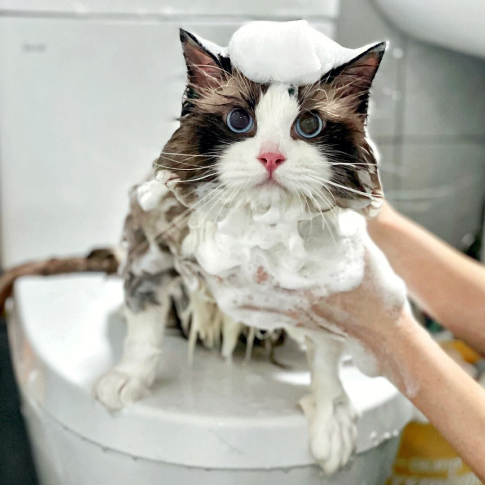
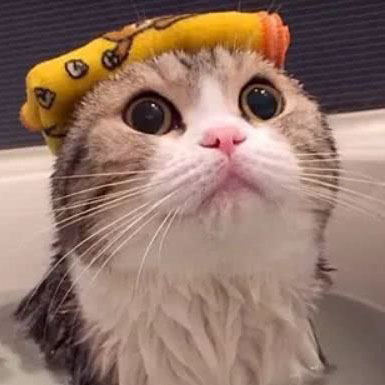

Bathing a cat can be a challenging task, as most cats do not enjoy being wet or groomed. However, if your cat has gotten into something dirty or has fleas, bathing may be necessary. Here are some tips for a newbie on how to bathe a cat: ①Gather supplies: You will need a cat-specific shampoo, towels, a washcloth, and a pitcher or handheld showerhead. Place these items within easy reach before you begin. ②Brush your cat: Before you start the bath, brush your cat's fur to remove any tangles or mats. This will make it easier to lather the shampoo and rinse your cat's coat thoroughly. ③Fill the tub or sink with warm water: Fill the tub or sink with enough warm water to submerge your cat up to its belly. Be sure to test the water temperature with your elbow or wrist to ensure it is not too hot or too cold.  ④Wet your cat: Use a pitcher or handheld showerhead to wet your cat's fur thoroughly. Be careful not to get water in your cat's ears or face. ⑤Lather with shampoo: Apply a small amount of cat-specific shampoo to your cat's fur, starting at the neck and working your way down to the tail. Avoid the face and ears. Massage the shampoo into your cat's fur, adding more as needed. ⑥Rinse thoroughly: Rinse your cat's fur thoroughly with warm water, ensuring that all of the shampoo is removed. You may need to use a washcloth to clean any hard-to-reach areas. ⑦Dry your cat: Wrap your cat in a towel and gently pat its fur to remove excess water. You may need to use several towels to dry your cat completely. Avoid using a hair dryer, as the noise and heat can scare your cat.